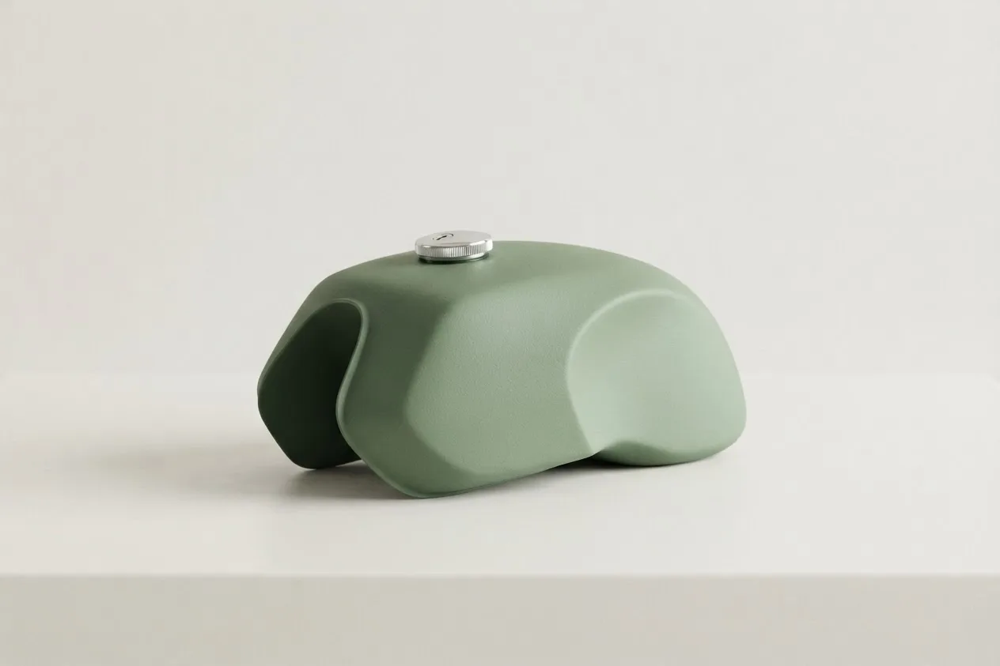
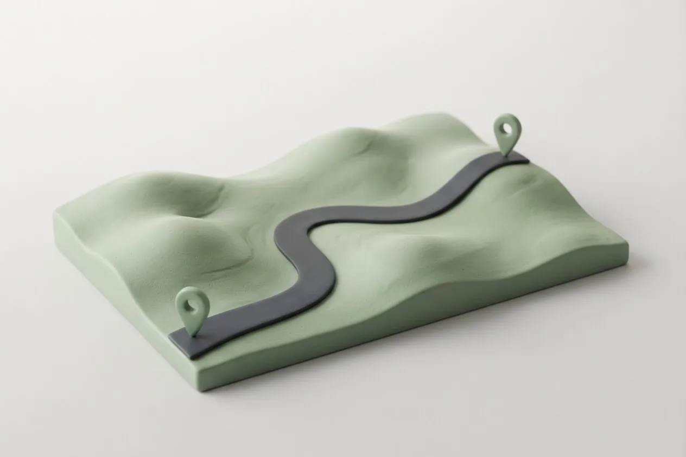

FuelTrack
Know how far you can ride before reserve, without squinting at a gauge your bike never came with.
- Status
- Live · v2
- Platform
- Web & installable phone app
- Role
- Solo — product, design, build
- Year
- 2026

What it is
A fuel gauge for bikes that don't have one.
FuelTrack is the fuel gauge your bike doesn't have. It's for motorcycles and scooters that never got one, which is more of them than you'd think.
It works from three things you already notice: when the bike goes on reserve, when you fill up, and the odometer. Tap On reserve when the engine sputters, log the fill at the pump, and FuelTrack tells you roughly how many kilometres you have before it happens again.
Version 2 rebuilt it as an installable phone app that works offline, then kept going: service reminders, paperwork expiry dates, and every rupee the bike costs you, so the true cost per km is right there, even when it stings.
Features
What it does.
One tap on reserve
Bike sputters? Tap On reserve. No typing, and it works without signal. The odometer can wait.
A gauge that learns
“≈ 197 km to reserve” on the home screen, sharper with every reserve-to-reserve cycle. Partial top-ups count too.
Low-fuel nudges
Pick a threshold and get a reminder before reserve, ideally before you're pushing the bike.
Service log
Oil, chain, air filter, brake pads, spark plug and tyres, each with its own interval. Issues stay open until a repair fixes them.
Paperwork reminders
Insurance, PUC, RC and licence expiry dates, with a nudge 30 and 7 days before.
True cost of ownership
Fuel, services, parts, insurance, tolls and washes, added up into an honest cost per km.


Built with
- Next.js
- React
- TypeScript
- Tailwind CSS
- Supabase
- Postgres
- Prisma
- Recharts
- PWA
- Vercel